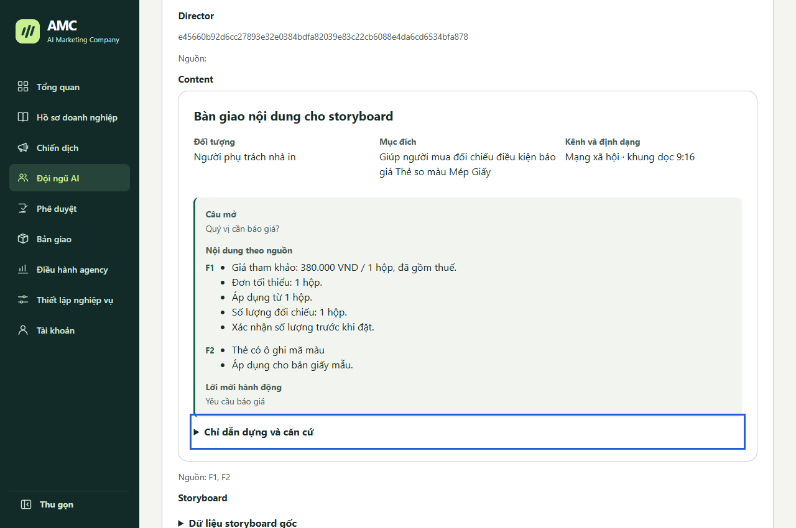
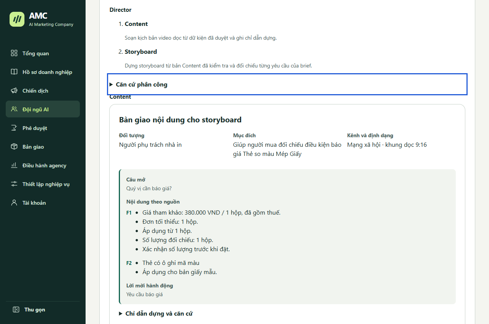
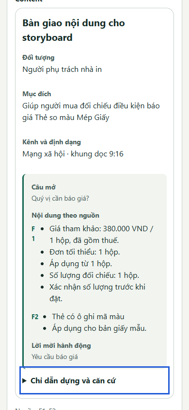
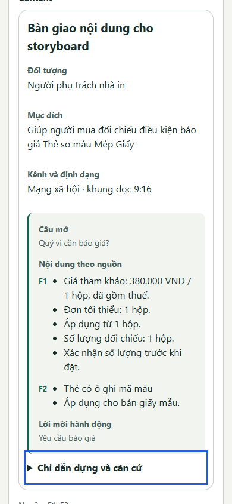
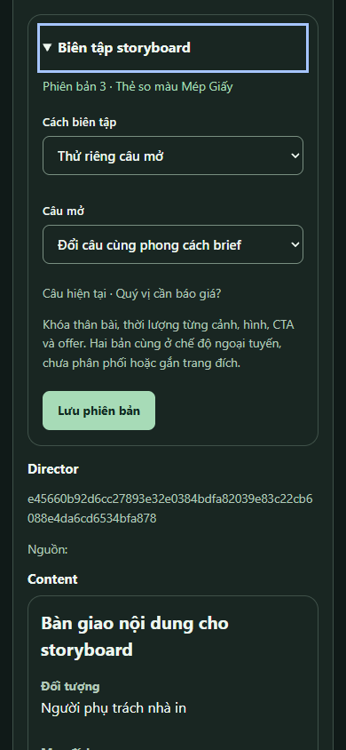
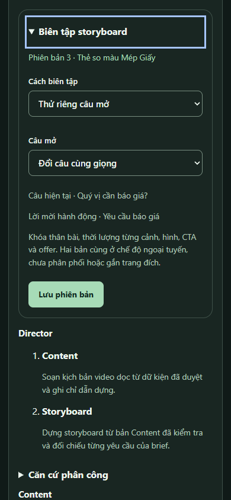

So sánh hai lần thực thi trên PostgreSQL bằng dữ liệu tổng hợp. Hồ sơ nhà in và CTA báo giá được dùng ở cả hai lần chạy. Mã run, phiên bản và mã băm của hai lần chạy độc lập nằm trong receipt trước và receipt sau.
Mở “Căn cứ phân công” để đối chiếu nguyên văn từng nhiệm vụ và SHA-256 của kế hoạch. Chromium dùng phím Enter để kiểm tra phần chi tiết.


Đối chiếu mã F1 cạnh điều kiện giá và F2 cạnh mô tả. Phép thử đo số dòng của từng mã nguồn trong DOM.


Trình biên tập hiện CTA đã duyệt dưới câu mở. Receipt ghi chiều rộng của nhãn dài nhất và vùng chữ khả dụng của dropdown tại từng viewport.


Chạy thêm ở kích thước 820 px, kiểm tra sáng/tối, lưu bản chỉnh sửa và reload khi gặp 412. Kết quả thẩm mỹ và thời gian phản hồi chỉ áp dụng cho trình duyệt, máy và nội dung tổng hợp được đo.